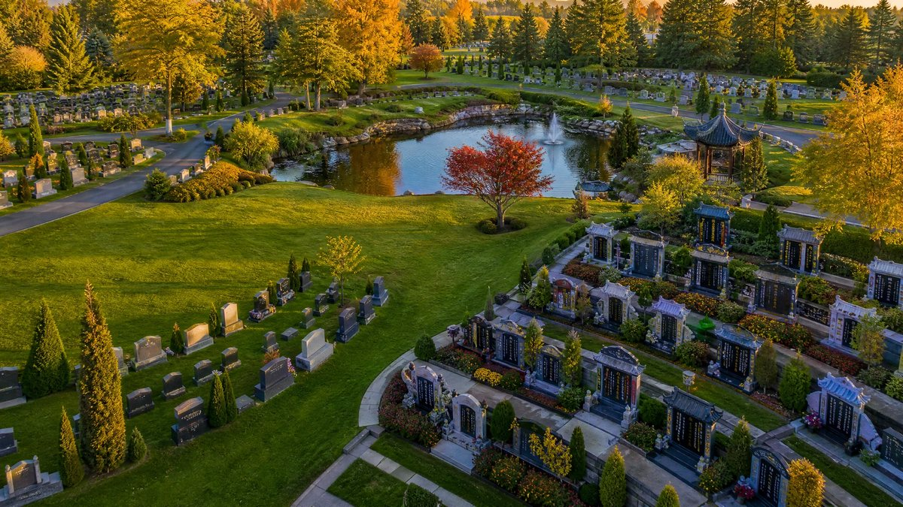
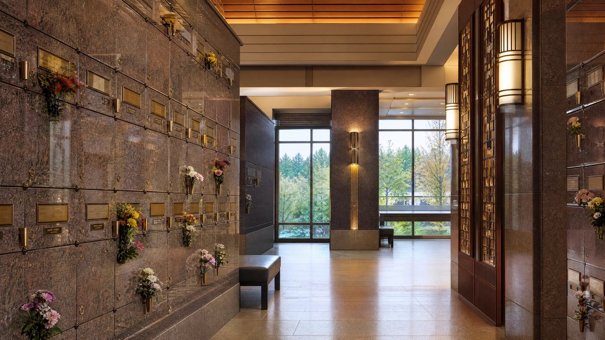
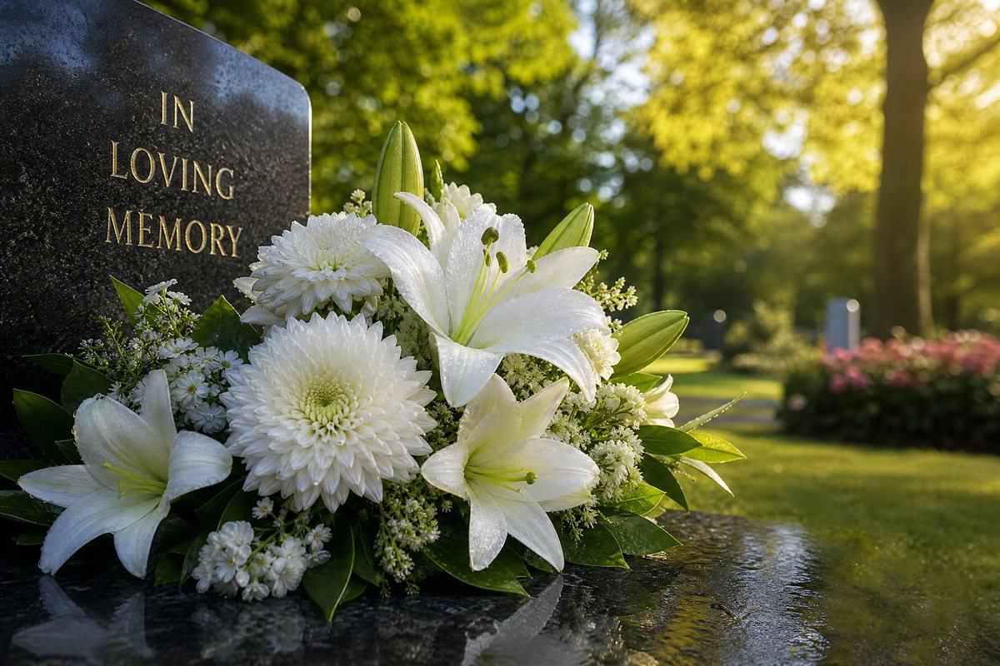

SERVICES · 服務範圍
生前預先買落福地，鎖定價錢、揀到心水位，傳統上有添福添壽之意，仲可以分期付款，慳返日後子女煩惱。
全程陪同實地參觀四大墓園，講解傳統土葬、室外骨灰土葬、骨灰壁葬同室內骨灰龕位（有暖氣冷氣）嘅選擇同風水坐向。
接運遺體、清潔防腐、化妝穿衣、入殮、靈堂佈置、喪禮儀式，守夜、上香、燒衣紙等傳統環節按家庭習俗安排。
協助辦理安省死亡證、健康卡同證件註銷，申請 CPP 喪葬補助等先人福利。
骨灰運返中國／香港嘅法律手續，以及由香港、內地將先人骨灰接嚟加拿大安葬（包括執骨移靈個案）嘅全套文件協助。
打電話或者微信 647-649-9188，講低您嘅情況，Amy 會用廣東話話您知下一步點做。諮詢免費，冇任何義務。
WHY AMY · 點解搵 Amy
安省註冊墓園福地規劃師，Arbor Memorial 連續 4 年全國銷售冠軍。
廣東話、國語、英語三語服務，同長輩傾偈冇壓力。
風水坐向、守孝習俗、各地鄉例做法都清楚。
分清「必須買」同「可揀買」項目，書面報價，話事權喺您。
預置計劃鎖定價錢；買福地只需畀 HST，免管理費、免空置稅、免地稅。
由臨終到安葬到福利申請，一個電話全程跟進。
ABOUT AMY · 關於 Amy
Amy Huang（網名「Amy四寶媽」）係加拿大最大殯葬機構 Arbor Memorial 嘅安省註冊墓園福地規劃總監，常駐大多倫多地區，識講廣東話、國語同英語，已協助超過 1000 個華人家庭辦妥福地購買同殯儀安排，連續 4 年攞到 Arbor Memorial 全國銷售冠軍。
佢精通風水坐向、守孝習俗同各地鄉例做法，仲會將「必須買」同「可揀買」攤開講清楚，話事權始終喺您手。
CEMETERIES · 服務墓園
四園均屬 Arbor Memorial（1947 年成立，已服務超過 100 萬戶加拿大家庭），設有華人專區並尊重傳統習俗。


HIGHLAND MEMORY GARDENS · 北約克
33 Memory Gardens Ln, North York, ON。市內交通最方便嘅華人墓園之一，拜山方便。
HIGHLAND HILLS MEMORY GARDENS · GORMLEY
12492 Woodbine Ave, Gormley, ON。華人段規模大，設燒衣紙爐等傳統配套。
PINE RIDGE MEMORIAL GARDENS · AJAX
541 Taunton Rd W, Ajax, ON。服務東邊（士嘉堡／皮克林／Ajax）家庭。
GLEN OAKS MEMORIAL GARDENS · OAKVILLE
3164 Ninth Line, Oakville, ON。服務西邊（密西沙加／Oakville）家庭。
FAQ · 常見問題
多倫多福地價錢視乎墓園、穴位大細同坐向【請向 Amy 索取最新價目】，風水位會有溢價。致電 647-649-9188 可取當期書面價目表。
可以。需要香港方面嘅火化證明同死亡證（經公證／認證），入境申報後即可喺多倫多墓園上位安葬。近年好多移民家庭都係咁樣將先人接埋嚟加拿大，Amy 提供全程文件協助。
長生位即係生前預先買落嘅墓位，傳統上有添福添壽之意。實際好處係鎖定價錢、揀到心水位、慳返日後子女煩惱，仲可以分期付款。
CONTACT · 在線預約
微信：1.647.649.9188 ／ AmyHuangToronto（Amy四寶媽）
電郵：ahuang@arbormemorial.com · 地址：12492 Woodbine Avenue, Gormley, ON L0H 1G0
